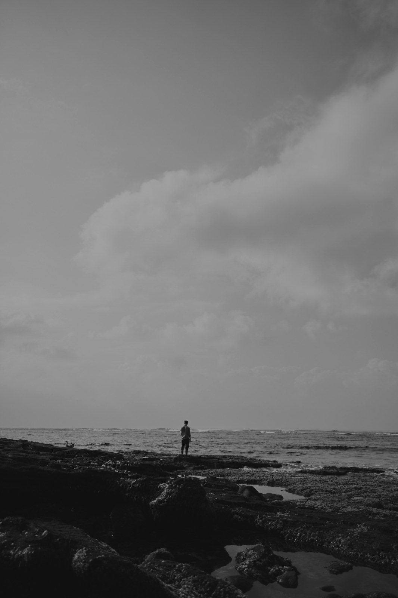

Удалить
для
всех
роман

18+
Содержит нецензурную брань
Всё, что здесь написано, выдумка, не реальность и не её пересказ. Любые утверждения об обратном являются провокацией и ложью.
Герои, которых вы встретите дальше, не существуют. Ни один из них не списан с живого человека. Имена подобраны на слух, образы собраны из сохранёнок в пинтересте. Если вам покажется, что вы кого-то узнали, вы по-моему перепутали. Компании, переписки, происшествия и разговоры вымышлены. Города настоящие, остальное нет.
Герой говорит то, что говорит герой. Я в этом не участвую. Издательство тоже. Ни одна его фраза не написана, чтобы кого-то к чему-то склонить.
Он пьёт, курит и употребляет. Посмотрите, чем это заканчивается. Я не считаю, что так надо жить, не считаю это свободой и не рекомендую повторять. В книге не сказано, где это берут, у кого берут, из чего делают и как принимают. Это не реклама и не пропаганда наркотических средств, психотропных веществ, их прекурсоров и аналогов, алкогольной и табачной продукции.
Здесь нет пропаганды самоубийства, насилия, жестокости, экстремизма и терроризма. Нет оправдания преступления и призыва его совершить.
Читать с восемнадцати лет на свой страх и риск.
Товарные знаки принадлежат их владельцам, я просто назвал вещи своими именами.
Эта книга — про ложь. Про ложь себе, друзьям, близким и всем вокруг. Ложью я прикрываю внутреннюю пустоту, слабость и нерешительность.
Вы на моём месте сделали бы то же самое.
01глава
В окно я вижу океан. Полоска чёрного экрана с битыми пикселями, зелёными фонарями рыбацких лодок, сливается с ночным небом. Вообще, это Балийское море — но всё равно кусок Индийского океана, скрученный в бухту изгибом полуострова Букит. Неяркие огни отелей, гестхаусов, дешевых и дорогих вилл рассыпаны по всему побережью светодиодной лентой. Тусклые звёзды пробиваются через полуночные облака.
Чтобы увидеть океан, не нужно залезать на крышу. Океан видно из окна виллы, которую мы снимаем напополам с Давидом. Вилла в Падонане, на две спальни и гостиную, где мы и сидим за ноутами последние полтора года, оккупировав Бали.
Зовут меня Демьян. Мне тридцать. Двадцать пять лет я прожил под Самарой, в небольшом городе, где в воздухе висит креозот, рядом железная дорога, зимой нечищенные от снега улицы, а летом — у всех из-за забора висят абрикосы. Потом — три года в Петербурге, куда переехал погулять на пару месяцев, но решил остаться. И вот второй год — на Бали. Заразился мечтой диджитал-номадов, когда на зиму обязан уехать на Пхукет или Бали. Ведь зима в России просто невыносима.
На часах два тридцать ночи. Я стою в темноте на прохладном полу босиком и смотрю в черноту окна. Кондиционер гудит под потолком. Белым горит цифра +16. Питерская температура позднего апреле.
Во рту — вкус соли, пота и чего-то приторного. Приглаживаю влажные волосы. Капли пота стекают по шее, щекочут между лопаток.
Кажется или пол задрожал? Кажется. Не землетрясение. На секунду закружилась голова — всё вокруг будто качнулось.
Кровать за спиной — в беспорядке. Одеяло сползло на пол, подушки раскиданы: одна в изголовье, другая валяется у края. Чёрный поводок змейкой лежит посреди кровати. Всё мятое. Влажные складки. В комнате воздух густой — дым благовоний, запах кожи, смазки презервативов, спермы и сладковатой гари. Дышишь — и он липнет к горлу. Будто раздавил перезрелый манго и кинул в костёр.
Шум воды в душе стихает. Открывается дверь ванной. Свет из проёма косо ложится на плиточный пол.
— Я всё, — говорит Маша. Тонкий силуэт в белом проёме. Её кожа кажется ещё темнее. Выделяются лишь светлые треугольники на груди и лобке. На ней — только узкий чокер с блестящим кольцом на шее. За которое, ещё несколько минут назад, был пристёгнут кожаный поводок.
Подходит ко мне. Обвивает руками меня за шею, целует. Губы вкуса морской воды. Прижимается грудью — мокрая вся. Холодные капли воды стекают на пол с чёрных волос. Собираются в скользкую лужицу на белой плитке.
— Красивая, — шепчу ей. Отпускаю.
Ночью я всегда говорю шёпотом.
Она медленно проводит пальцами по моей груди, скользит ниже, к животу. Кожа блестит. Огибает две родинки, едва касаясь белыми ногтями. С тумбочки берёт телефон и начинает скролить ленту. Разворачивается, делает два шага и падает на постель — без всякого стеснения. Лежит на животе. Болтает ногами.
Кондиционер гудит, гонит вязкий воздух по квадратной комнате. Я тоже беру телефон и открываю сайт AirAsia. Ввожу в строке Saint-Petersburg. Лента выдаёт список билетов. Закрываю. Кладу телефон на стол.
— Ты как будто… не здесь, — бросает она, не отрываясь от экрана.
— В смысле?
— Ну… задумчивый какой-то.
— Да нет. Всё нормально, — отвечаю я.
— Ты так говоришь, будто на автомате, — не отстаёт она. Убирает телефон и переворачивается на спину. Приподнимается на локте, закидывая ногу на ногу. Полностью голая, как будто это её естественное состояние — сидеть постели среди смятых простыней и не париться.
Я смотрю на её обнаженную грудь. На коже сверкают капли влаги. Она чуть подаётся вперёд и смотрит на меня снизу вверх — ехидно, с лёгкой ухмылкой, будто знает, что её вид цепляет сильнее, чем я готов признать.
— Хочешь ещё? — спрашивает она и медленно раздвигает ноги.
— Я хочу пить, — отвечаю ей и беру со стола бутылку воды. — И решил уехать.
— Куда?
— В Питер.
Она смотрит на меня не моргая. Потом моргает. Кладет ногу на ногу.
— Сейчас? — говорит Маша.
— Через пару недель.
Она молчит. Берёт телефон, разблокирует экран. Кладёт обратно.
— Я думала, мы на выходные в Убуд поедем.
Это звучит не как претензия или обида. Просто фраза девушки, которая строила какие-то планы.
Встаёт и начинает искать одежду. Находит чёрный топ на полу, натягивает.
— Ладно, — говорит она.
— Поехали прокатимся. Давид звал на тусовку, — говорю я. — Одевайся.
— А что там будет? — спрашивает Маша, надевая чёрные трусики.
— Всё как обычно.
Давид скинул точку и написал: «Езжай быстрее, а то все уже расходятся. Я буду недолго». Он всегда так пишет, а потом остаётся чуть ли не последним. Если только не найдет какую-нибудь новую знакомую и не увезёт к нам на виллу, чтобы я утром столкнулся с ней у холодильника: она в майке и трусах, я — за молоком. Такое уже было. Дважды. Ладно, трижды. Или четырежды. Эти девушки все одинаковые: так похожи, что можно подумать — вчера была она же или другая?
Навигатор показывает адрес в Керобокане. Десять минут на байке. Ночью на Бали всё рядом: дороги пустые, влажный воздух с запахом прогорклого дыма от сжигаемого где-то за забором мусора. Ни пробок, ни полицейских постов — шлем можно не надевать.
Выезжаем с виллы: ворота со скрипом закрываются. Звук разносится по всему рисовому полю напротив. Рис недавно взошёл и зелёной щеткой покачивается от слабого ветра. Маша, держит телефон в одной руке и что-то смотрит в инсте, а второй — обхватывает меня за талию. Стараюсь не сильно газовать, чтобы не бесить соседей. Да и меня самого раздражают громкие байки. Особенно ночью.
— Держишься? — спрашиваю я.
— Угу, — отвечает Маша.
Когда мы выезжаем на Рая Падонан — широкую дорогу, к самым шумным местам Чангу — запах солёного ветра смешивается с синтетическими испарениями бензина. Хотя ночью и они немного выветривается.
Смотрю на часы — почти три ночи. Ночной Бали другой. Днём остров душный, пережаренный, особенно в январе-феврале, закупорен пробками и возгласами туристов, но ночью выдыхает: в витринах горят тусклые лампы, шум океана где-то вдалеке не перебивают осточертевшие басы пляжных баров. Дороги свободные, только редкие байки едут по своим ночным делам. Не жарко. Даже порой холодно и приходится накинуть куртку.
Ночью остров перестает соответствовать фразе: «каждый день одно и то же». Лампочки у варунгов греют крылья ночных мотыльков, запах жареного риса и острого самбала тянется вдоль дороги. Ещё не выветрилось за ночь.
Иногда, если ехать достаточно поздно или, наоборот, на рассвете, можно увидеть, как балийцы в чистых саронгах собираются в храмы: женщины несут корзины подношений на головах, мужчины в белых уденгах.
Я прибавляю газ, и в свете уличных фонарей дорога блестит. На изгибе, недалеко от перекрёстка Рая Чангу, где днём всегда дежурит полиция, я замечаю белый силуэт. Байк лежит на боку, белый PCX, чуть в стороне от дороги, возле въезда на узкую, утопленную в темноте улицу. Рядом с байком стоит девушка в белой короткой юбке, джинсовке и с телефоном в руке. Наряд — явно не для того, чтобы свалиться с байка в три ночи. Звонит кому-то.
Сбавляю ход.
— Надо помочь, — говорю Маше.
— Байк уронила? — громко говорит Маша.
— Да, скорее всего, — отвечаю я, и мы сворачиваем к обочине.
Подхожу. Сразу видно — русская. Свои считываются моментально. Выглядит как героиня из тиктока: юбка, белая майка с розовым «Hello Kitty», джинсовка. Взгляд — чуть растерянный, чуть обиженный.
— У вас всё в порядке? — спрашиваю я.
— Привет, — кидает Маша, оценивающе глядя.
— Привет! — отзывается девушка. Голос звонкий, чуть хрипловатый. — Да, вот, просто байк уронила на повороте. Звоню друзьям, но никто не отвечает.
— Может, спят.
— Да не, они на тусовке.
Её голос звучит чуть расстроенно.
— Сейчас помогу, — и беру байк за руль и сидение. Поднимаю. Ставлю на подножку. Из-под колёс запах горячей резины. Байк не сильно покоцался. Несколько потёртостей на белом пластике. Зеркало погнуло. Мелочи.
— Спасибо большое! — отвечает она, складывает руки в молитвенном жесте, и смотрит на меня взглядом кота из «Шрека». Большие, блестящие, почти мультяшные. Без Маши я бы точно зацепился с ней разговором, спросил, откуда она, куда ехала, и, возможно, познакомился бы.
— Да, без проблем, — улыбаюсь я. — Поехали, — говорю Маше и беру её за руку. Она машет рукой «Хэлло Китти» и мы садимся на байк. Девушка радостная машет в ответ.
Мы трогаемся с места. Я чувствую, как Маша обнимает меня чуть крепче, чем до этого. В зеркале ещё пару секунд вижу белый PCX, пока поворот не съедает свет фар, и снова — прохладная, липкая ночь, в которой легко поверить, что такие случайные встречи что-то значат. Хотя на деле — вряд ли.
Через пять минут мы доезжаем до виллы, куда меня звал Давид. Там какой-то его друг мутит пати.
Давид — дизайн-директор в международном стартапе. Тридцать девять лет. Приехал из Москвы. Всегда налысо стриженный. Гоняет на литровом зелёном «Судзуки». С виду типичный «пацанчика» с Чертаново, которому случайно выпало заниматься дизайном. Зарабатывает, где-то десятку долларов в месяц, плюс фриланс — еще столько же. Жить может хоть в Нью-Йорке, хоть в Дубае, но выбрал Бали.
«Я больше всего люблю две вещи — деньги и женщин» — это его собственная формулировка. Мир у него простой и понятный. Рефлексировать он, может, и рефлексирует, но как-то по верхам, не задерживаясь.
Музыку слышно ещё с парковки. У бассейна — человек десять. Несколько парней лежат в шезлонгах с бутылками «Бинтанга», о чём-то живо болтают. Не знаю их. Две девушки танцуют босиком на барной стойке, держась за руки, опрокидывая всё вокруг себя. Обе пьяные и веселые. В бассейне стоит чувак с дредами и блондинка в татуировках, тоже что-то обсуждают. Ещё компания у стойки, со стаканами с чем-то цветным внутри.
Балийские вечеринки совсем скоро начинают выглядеть одинаково: новые лица, которые забудешь через два дня. Обязательно позвать диджея, обязательна чайная церемония. Обязательно прыгать в бассейн и пьянки с запрещенными веществами. Бинтанг ящиками, — местное дешевое пиво; виски, текила, вино — всё это в четыре раза дороже, чем в России. Алкоголь тот же, что и у нас, Виски — от «Блэк Лейбла» до не запоминаемого названия из Японии.
Морок про вечный праздник, волшебство и «найди себя», непременно в Убуде, растворяется быстрее, чем туман над Бату Болонгом в семь утра. Невозможно жить в постоянном празднике и радоваться, если ты не умалишенный. От праздника тоже выгорают.
Всё остальное тоже можно купить. Так же как и в России снимается «закладкой» поздней ночью, по координатам, где-то в районе, куда туристы не суются. Или ещё проще — Риталин в аптеке без рецепта. Это типа лекарство от СДВГ, которое расфорсили в фильмах про хакеров, где герои глотают таблетки, чтобы не спать и продолжать кодить. Отличное средство, если вам нужно много работать, а совсем не хочется. Продаётся в аптеках в виде зелёных блистеров и называется Prohiper, стоит примерно четыреста пятьдесят тысяч рупий за десять таблеток. Хватает на неделю, если работать, и на одну ночь, если тусить. Побочное действие — немного потеют ладони, от чего ноутбук начинает бить током.
Локальные тусовщики толкут таблетки в порошок, делают дорожки и продолжают героически тусить ещё сутки. Потому что зачем спать, если ты на Бали?
Давид рассказывал, что у него был друг, который устраивал марафоны под Риталином. Закрывались с девушкой на вилле, нюхали, пили вино и трахались всю ночь. Могли не спать по трое суток. Здесь, куда мы приехали, такие ребята есть точно.
Держу Машу за руку. Ладонь у неё прохладная и чуть влажная. Мы проходим по каменной дорожке вглубь виллы, мимо подстриженных кустов и низких фонарей. У входа в дом парень в белом кимоно, с хвостиком и в узких чёрных очках, рассказывает что-то про крипто проекты чуваку рядом с ним. Тот кивает с видом человека, который потерял нить повествования минут десять назад.
— Привет, — говорю я. — А где Давид?
— Здорово! Он вон там на кухне вроде бы, — указывает в сторону комнаты парень с хвостиком.
— Понял, спасибо.
В небольшом саду на чёрных кресло-мешках спит девчонка в блёстках на лице и белом сарафане. Рядом, видимо её парень или друг, залипает в телефоне. Его лицо подсвечивается голубым экраном.
Девушки, танцевавшие на барной стойке, с радостным визгом прыгнули в бассейн, окатив парней в шезлонгах. Те матерятся, отряхивают телефоны. Всем весело. Не весело, видимо, только соседям этой виллы. На часах далеко за три часа ночи.
Вилла на четыре комнаты и гостиную, стены выкрашены белой краской. Окна в пол. Высокие потолки. На стенах картины с цветной абстракцией, белые высокие глиняные вазы у лестницы на второй этаж. Всё чистое, дорогое и совершенно безликое, как номер в отеле. Мы проходим на кухню.
— Здорово! — говорю я Давиду.
— Оо, Диман, всё таки приехал, — отвечает он, отрываясь от диалога с девушкой в чёрном облегающие комбинезоне. Он без майки и со стаканом какой-то выпивки в руке.
— Да, мы ненадолго, — отвечаю я. — Это Маша, — представляю ему спутницу своих последних двух недель. Он смотрит на меня лукаво.
— Привет, — говорит Маша.
— Салют, — отвечает Давид. — Приятно! — и улыбается ей.
— Взаимно.
— Это Кристина, — представляет Давид девушку в комбинезоне. — Она вот недавно прилетела на Бали. Фитнес тренер.
— Привет, — знакомимся мы.
Модельная внешность, стройная, подтянутая, высокие скулы, немного надутые губы, волосы убраны в хвост, практически чёрные глаза. На левой руке — забитый татуировками рукав: цветы, тонкие стебли, женское лицо, выведенное аккуратными линиями, что кажется настоящим. С недавнего времени я начал называть таких девушек обладательницами популярного скина. Базовый скин на Бали. Не слишком индивидуально, зато работает.
У Давида девушки не задерживались. По его же словам, их было больше ста пятидесяти — я даже не уверен, что он всех помнит по именам. Все — плюс-минус одно лицо, одна внешность, фигура. Как эта Кристина. И ни одна из них не стала «той самой». Если не эта — значит, следующая. Или, как в рилсах: «Она не твоя, сейчас просто твоя очередь».
Если на первых минутах общения не срабатывало что-то химически-инстинктивное — всё, гейм овер, спасибо, до свидания. Без попыток «понять», «раскрыть», «дать шанс». Как-то не так повела себя на первом свидании, что-то не то сказала — с ней сразу всё понятно, дальше идти незачем.
Я так не умею. И это меня бесит.
— Будете что-то пить? — спрашивает Давид.
— Я нет, — отвечаю ему. — Завтра рано вставать и мне ещё Машу домой везти.
— А чо вы, оставайтесь здесь? Эрик не будет против.
Эрик видимо хозяин виллы. Я его не знаю.
— Не сегодня, завтра всё же рабочий день.
— Ты будешь что-нибудь? — спрашиваю Машу.
— Я бы выпила вина. Белого. Если есть.
— Сейчас найдем, отвечает Давид.
В этот момент на кухню входит девушка.
— Блин, я так опоздала. Навигатор запутал, байк уронила, — говорит «Hello Kitty». Та самая, которой я пять минут назад помогал поднять её белый PCX с обочины.
Кристина подбегает к ней и обнимает. Обе чересчур рады встречи. Давид тоже подходит, обнимает. Она оказывается подругой Кристины, которая новая девушка Давида или типа того. Мы знакомимся.
— О, привет, — кидает она нам с Машей, как будто мы старые друзья и также энергично машет рукой, как тогда на дороге.
— Привет, — отвечаю я.
Рассказывает, что заблудилась, навигатор заглючил, свернула не туда, не удержала байк. На острове недавно, ездить толком не умеет. Зовут Алина. Маркетолог в какой-то международной компании, которая то ли продаёт тренинги, то ли аутстаффит эскортниц в Дубай. Тут я уже не понял — шутка это или просто она случайно проговорилась.
— Демьян? — переспрашивает она. — Серьёзно?
— Все обычно называют Дима, — отвечаю я.
— Да ну. Демьян лучше звучит. — Она наклоняет голову, разглядывая меня с каким-то новым интересом. — А друга Эмиля у тебя случайно нет?
Я не понимаю, о чём она.
— Нет. А должен быть?
— Гессе почитай. Потом поймёшь.
Она улыбается и не объясняет. Берёт у Давида стакан, делает глоток и морщится — слишком сладко. Давид тут же предлагает ей что-то другое. Я замечаю, как Маша рядом молча крутит в руках свой бокал.
Затем говорит, как что приехала сюда первый раз, поэтому остров кажется магическим и таким же, как на фотках в инсте. Мы киваем и рассказываем ей этот обязательный набор сказок: «здорово жить на острове», «надо снимать виллы в одном районе, чтобы ходить друг к другу в гости». Всё это звучит как реклама, которую мы уже сто раз слышали и столько же раз повторяли. Но она почему-то работает.
Затем мы все расходимся по вилле.
Пати течёт сама собой: разговоры о новых тусовках в Убуде и тантра-пати переходящих в свингер-вечера. Спор о том, кто первый привёз на остров вейпы. Смех, запах травы. Кто-то прыгает в бассейн в одежде. На другом конце виллы двое обнимаются, шепчутся, а потом исчезают в одной из спален.
Маша растворяется среди девчонок, смеётся, кивает в такт музыке. Я сижу у бассейна и пью апельсиновый сок. Пахнет хлоркой, пролитым пивом и сладким дымом. Слышно хихиканье и громкий плеск — одна из девчонок в бассейне, из тех, которые танцевали на стойке, стянула майку под всеобщее одобрение и аплодисменты и осталась в одних шортах.
Я лениво слежу за Машей — она стоит у барной стойки, наклонилась к какому-то парню в длинной белой рубашке, что-то говорит, смеётся. У неё в руках бокал. Алина тоже рядом, говорят с Кристиной и Давидом.
И вдруг взгляд цепляется за движение у забора. Чёрный кот. Идёт по верхушке изгороди. Бесшумно, хвост вытянут. Совсем чёрный — без единого белого пятна. Подходит к середине, спрыгивает на газон и останавливается. Поднимает голову и смотрит на меня. Прямо. Взгляд — вязкий, втягивающий, как воронка.
Музыка обрывается — остаётся только густой гул в ушах. Мигает свет. Гаснет всё — даже подсветка бассейна, и на миг я будто выпадаю из привычного мира. Пространство чернеет, становится плотным. Мир вывернули наизнанку. Люди замолкают. По коже пробегает холодок.
Я мотаю головой, пытаясь отогнать наваждение. Вверху — звёзды, на востоке небо уже начинает розоветь. Тянусь за телефоном в карман… и в ту же секунду всё оживает: музыка, свет, голоса. Смотрю на место, где был кот. Пусто. Никто вокруг даже не заметил.
Домой я возвращаюсь под утро, когда солнце режет глаза и уже жарко. По пути отвожу Машу — она живёт недалеко, двадцать минут от меня. В Керобокане. Спать остается всего несколько часов. Завожу будильник. Ложусь не раздеваясь в постель и тут же засыпаю.
9:57. Через три минуты рабочий мит. Кое-как встаю. Иду умываться. Затем быстро на кухню. Достаю из ящика зелёный блистер, выдавливаю две таблетки, запиваю водой. Сердце ускоряется, мир сдвигается на полшага вперёд. Через пару минут голова будет работать так, будто я успел выспаться.
Открываю Google Meet, включаю камеру.
— Hey, everyone! — улыбаюсь в экран.
Но чтобы вы поняли, как я оказался в этой точке — в три ночи на чужой вечеринке с девушкой, которую знаю две недели, и поиском билетов в Петербург, — надо отмотать назад.
02глава
Уже год и семь месяцев я живу на Бали. Всем же нравится Бали. Мне тоже — но я не как все. Или, по крайней мере, упорно пытаюсь в это верить.
Лонг блэк, бейгл с тунцом, бест-скрэмбл из «Бэйкда» и пять минут до пляжа Сесех. Воздух горячий. Серферы с досками. Австралийцы сто процентов. Высокие парни с вьющимися светлыми волосами. Майки в узорах пальм. Пена на солёных волнах. Блики сверкают. Тридцать градусов жары, солнце триста шестьдесят пять раз подряд. Вечно горячий асфальт. Байки застряли в пробке. Дым из квадратных коробочек подношений. Храмы из лавового камня и снов Лавкрафта. Ритуалы. Ньепи. Агунг на горизонте. Рисовые террасы под охраной Юнеско.
На ИксМаксе, скользить между пробок по Рая Чангу, выехать на встречку, увернуться от чёрной «Тойоты», подрезать местного на медленном Скупи. Гулять на закате, небо персиковое, запах озона после дождя и водорослей на берегу. Проваливаться в песок, смотреть, как волны мешают грязный серый песок. Гладить мокрых собак на пляже — фу, все мокрые. Песок липнет к рукам. Улыбаться русским двадцатипятилетним девчонкам в бикини, коротких шортах и тёмных «Рейбанах» — загорелым, весёлым, беззаботным, с белой улыбкой и цветами франжипани в волосах.
Когда последний бар закроется в час ночи — ехать к знакомому на виллу. В сырой темноте. У него есть всё, что не продаётся легально. Нет, не посадят. Никто не узнает. Да и друг его привёз «совсем чуть-чуть».
Вот такая у меня охуенная жизнь. И я хочу её всем показать. Пощу фотки в инсту: я на фоне океана, закат на Меласти, водопады в Убуде, бокал на тонкой ножке с фильтр-кофе, здесь так подают, да. Смотрите на меня все. У меня получилось. Сумел. Вырвался из своей дыры и теперь живу по-настоящему.
Только последнее время я стал замечать: просыпаюсь — и первые секунд десять не понимаю, зачем. Лежу, смотрю в потолок, слушаю, как где-то вдалеке орут петухи, тарахтит газонокосилка, а я лежу и жду какого-то знака, который объяснит мне зачем это всё. Потом встаю, чищу зубы, открываю ноутбук. Всё по инерции.
Я приехал на остров, когда компания, где я работал, спешно собрала манатки и перевезла офис в Белград из серого Петербурга. Попутно выкинув из штата всех неугодных сотрудников. Несложно догадаться, что я был одним из них. Релокация — дело не из дешевых, особенно в момент, когда завтра вам отрубят SWIFT.
Уволили цинично — аккуратно накануне моего дня рождения. Четырнадцатого апреля. Овен по знаку зодиака. Мне это не важно. Но тут — на Бали — важно, по крайней мере для тех, кто селится в Убуде: веган ты или мясоед, ретроградный Меркурий, чакры, натальные карты — вся хуйня, в которую я не верю. Я их стараюсь избегать, таких тусовок. Мне не важно, что важно им, а им не важно, что важно мне. Не сработаемся.
А вот с другой командой — сработался. СЕО написал мне пятнадцатого апреля. В мой день рождения. Позвал в команду.
— Вас не смущает, что я русский? — спросил я. Команда проекта распределенная, а Крис, основатель, из Португалии. Был самый пик СВО.
— Нет. Абсолютно не важно. У тебя крутые кейсы, — ответил он. И он прав.
Кто бы отказался? Зарплата в четыре раза выше, чем в прежнем аду. Удалёнка. Свободный график. Слово «свобода» впервые зазвучало честно. К тому же смогу реализовать свой план — пожить на Бали два года. Я согласился.
Считаю, что мне повезло. И вообще — я везучий. Неудачи забываю быстро, а моменты, где всё сработало в мою пользу — помню. Правда, часто обесцениваю. Называю это просто — «повезло».
Я работаю арт-директором в стартапе из Берлина. По сути — старший дизайнер, который делает почти всё: от первых вайрфреймов до финальных решений на проде. «Фигма» — мой основной инструмент. Двигать текстовые блоки, пиксели, иллюстрации и раздавать задачи дизайнерам-помощникам — моя работа.
Я — тот самый чувак, из-за которого вы скачиваете очередное приложение… а потом страдаете от пушей, промо и предложений, выскакивающих не в тему, когда в метро и листаете тиктоки.
Я делаю пользовательский опыт «лучше» — так, чтобы вы не почувствовали стресса, не ушли раньше времени, не забыли нажать туда, куда мы хотим. Ведь если вам неудобно, если что-то кажется сложным — это не вы отупели от шортсов и рилсов, это мы — те, кто проектировал, мы — виноваты.
Вам-то кажется, что вы сами выбираете, каким сервисом пользоваться, но всё давно решено за вас. Поверьте, маркетологи всё просчитали: когда вы проснётесь, что вы откроете первым делом — даже раньше, чем почистите зубы. Уж поверьте, я в этом деле давно и знаю как всё устроено.
На созвонах моя аватарка — чёрно-белый силуэт, где я смотрю в сторону, пол-лица скрыто тенью. Но моё имя запоминают все.
«A Диман выйдет?» — кричали пацаны в окно, стоя у дощатого забора. Я жил в небольшом частном доме в провинциальном городе. От деревни город отделяло только множество четырёхэтажных хрущёвок. Дом стоял на улице Демьяна Бедного. Только в университете я узнал, что это советский поэт.
Друзья звали Дима, или просто Диман. Полную форму приходилось объяснять: я не Дмитрий, я — Демьян. Да, редкое. Да, греческое. Переводится как «целеустремлённый». Такой, который не боится преград. Есть и другой перевод — «покорный». Об этом я никому не говорил. Ни в детстве, ни потом.
Меня почему-то не напрягало, что имя у меня не как у всех. Ну, типо есть всякие Саши, Коли, Паши, хотя Диманов тоже много, но чтобы Демьян. Я такой был один в городе. Поэтому и прижилась идея, что я не как все. Мама любила всё необычное, поэтому так и назвала. Когда я спросил — почему, она сказала: «Потому что красивое имя. И никто не перепутает».
С Машей мы познакомились в Тиндере. Двадцать шесть лет. Тёмные волосы с медным отливом. Карие, почти чёрные глаза. Кошачья улыбка. Стройная фигура. И сделанная грудь третьего размера.
Маша тоже из Питера. Я же говорил, что мне везёт? Третий раз на Бали, но первый — без обратного билета.
Листаю её инсту. В ленте — Пекин, Сингапур, высотки Гонконга и Бали. Она в розовом купальнике на фоне Нуса Пенида. Тот самый пляж с «Ти-Рексом», прозрачной водой и вайбом из рекламы Мальдив в инсте. Везде она в смелых позах, но не слишком откровенных. Она знает, что она красивая. И кайфует от себя. И не собираетесь это скрывать. Такое притягивает. И всё равно, что таких девушек часто можно перепутать в инсте.
Онлифанса у неё нет. Никаких приватных телеграмов с нюдсами. Просто красивая девчонка, которой нравится быть собой — и быть в кадре.
Открываю рилс с той же Пениды. На превью она в тёмных очках, смотрит в сторону — и в тот же момент обезьяна ворует у неё очки. Буквально срывает и убегает. Типичная хроника. Видео смешное. У Маши искренний и солнечный смех. Не знаю почему, но мне всегда важно какой голос у девушки. Часто даже важнее её фигуры.
Листаю дальше: она — в платьях, в дорогих отелях, на яхтинге в Петербурге.
У нас сразу завязалось лёгкое и ненапряжное общение. Хотя обычно в Тиндере сложно кого-то вывести на беседу. Пара сообщение и переписка затухает. С Машей не так.
Скидываю ей фотку Батура из окна. Она в ответ — видео заката. «Обожаю закаты», пишет. «В Питере, кстати, самые красивые». Обсудили, кто где живёт в Петербурге, чем занимаемся. У неё — своя студия косметологии. Сказала, что вообще ничего не понимает в айти, когда я объяснил, чем зарабатываю. Ну и славно. Ненавижу разговаривать о работе. Особенно с красивыми девушками, особенно когда работа заебала и хочется говорить только о весёлом, смешном и сексе.
Договорились встретиться на завтрак в «Копенгагене» — кафе рядом с Сесехом. Сесех — часть Чангу, где я снимаю виллу с Давидом и живу уже полтора года.
Чангу — туристическая мекка Бали. Сюда слетаются со всей планеты. Район не про серфинг — волны тут не ахти. Чангу — про утренние тусовки, шумные завтраки, бриоши с лососем, фильтр-кофе и вайб «ещё один день в Ешь, молись, люби». Кафе, клубы, рестораны, бары, пятизвёздочные отели — всё утыкано вдоль океана и на главных улицах. Всюду пахнет наси-гареном, манговыми боулами, солнцезащитным кремом, бензином и арома-палочками из подношений у храмов.
Рисовые террасы которые были в мой прошлый приезд уже застроили магазинами с купальниками, барбершопами и новыми кафе с пп-едой. Там, где два года назад балийцы в конических шляпах стояли по колено в воде и сажали рис, теперь парковка и вывеска «Lola’s Cantina Mexicana».
Тот самый шорткат в Чангу, который все знают, — уже не разбитая дорога, из которой вываливаются камни, а байки летят в рисовое поле. Теперь это полноценная асфальтированная полоса с застройкой по обе стороны: справа — мелкие шопы, слева — магазины сёрф-досок и очередной коворкинг. Только маленький храм на перекрёстке пока стоит — серый камень, каменный Ганеша, корзинки с подношениями у ног. Вокруг него обтекает стройка, как вода вокруг камня. Ещё через пять лет Бали будет совсем другим.
Когда гуляю по Чангу или Убуду, то и дело замечаю — повсюду симпатичные девчонки. Одежды — минимум: жара, отпуск, остров, загорать надо, никуда не торопиться. Большинство загорелые, стройные и всё такое. Европейки попроще к этому: часто одеты в первое, что из шкафа выпало, не накрашенные, равнодушные к внешности.
Но если всмотреться — обычные. Просто загар, просто короткие шорты, просто эффект «черлидерши» — когда в компании кажутся красивее, чем поодиночке.
На Бали всё располагает, чтобы затусить без серьёзных обязательств. Ты здесь на пару недель, она — на месяц. Провели классно время: походили по барам, в рестораны с видом на джунгли, прокатились на водопады, занялись сексом ночью бассейне, где сквозь пальмы звёзды видны — и всё. Разъехались. Она в Москву, ты в Петербург. Каждый с воспоминаниями в ленте айфона.
В Чангу можно услышать просветлённые речи русских. Как-то стою во Фрестиве — это маркет с типо хэлси-органической едой, соками и свежими фруктами. Рядом — пара: парень тянется за нарезанными ананасами в пластиковом контейнере.
— Ты не знаешь, в каком состоянии, в каких условиях и при каких вибрациях это было сделано! — скривившись, почти шипит его девушка рядом.
Бедняга замер в ступоре.
Даже мне стало боязно за свою карму и вибрации. Так сходят с ума обычно в Убуде. Там, где сандалом пахнет сильнее бензина, где каждый третий — целитель, йог, веган и каждая вторая — муза, богиня в платье в пол. Туда и селятся — к «центру вселенской чакры», поближе к природе, тишине и микро-мирам внутри себя. Но иногда их, вибрационных, заносит и в Чангу. Но надолго их здесь не хватает.
Работать я начинаю часов с двенадцати или типо того. После завтрака, в кафе на берегу океана или с видом на рисовые поля. На Бали это привычное поведение, закреплённые повадки. Утром — практики: йога, медитации, кафе и серфинг, а после двенадцати, когда солнце становится невыносимым, — можно и поработать.
Раз в неделю у нас с командой большой созвон. Обсуждаем фичи, retention-механики, как удержать клиента в приложении, как подсунуть ему очередную услугу, как заставить открывать наше приложение, когда он только проснулся и ещё даже не успел приступить к утренней дрочке. Последнее, конечно, утрирую, мало кто заходит в финансовые приложения едва открыв глаза.
Спешить мне особо некуда. На комментарии по макетам в Фигме я могу ответить позже, сами макеты смогу сделать — тоже позже. И от этого особенно смешно наблюдать, как кто-то из дизайнеров считает свою работу важной. Мы меняем мир! Сделаем мир лучше!
Нет. Не меняем. Не сделаем. Мы делаем так, чтобы человек не закрыл приложение. Чтобы нажал туда, куда мы хотим. Чтобы не заметил, как потратил двадцать минут, которых у него не было. Я — часть этого мира: пушей, баннеров, акций, лендингов, подписок, скруглённых иконок на экране вашего айфона. Я проектирую зависимость, упаковываю её в красивый интерфейс и получаю за это зарплату, которая позволяет мне жить на Бали и жаловаться на бессмысленность. Мой вклад в культуру цифрового оскотинивания — очевиден.
Я уже давно разочаровался в профессии. Но делать больше всё равно ничего не умею. Тем более за те деньги, что мне платят, я готов продать ещё своего времени, пока не накоплю тысяч триста и не уйду в благополучный саббатикал или gap year.
Последнее время не осталось ничего, что давало бы смысл вставать утром. Разве что счета и обязательные траты — необходимость поддерживать уровень жизни, который я себе устроил и вам расхвалил.
Я даже уверен: такие как я виноваты в том, что пришли туда, куда пришли — всем теперь подавай комфорт — быстро, гладко, в два счёта. В приложении — мы получаем это в момент. А в жизни? Почему не так? Я же клиент! Я хочу нормальный клиентский сервис и в жизни!
Мне давно пора всё бросить. Но, ебать, как я этого боюсь. Раньше я думал — боюсь остаться без денег. Сейчас понял: я попросту не знаю, что делать, если мне внезапно не нужно будет открывать ноут и разбирать лейауты.
За эту работу я получаю такие деньги, о которых в моём родном городе лучше помалкивать. Или не поверят. Или дадут пизды. Моя зарплата за месяц может превышать годовой доход того, кто вкалывает по двенадцать часов на железной дороге. Деньги я не считаю. На ценники не смотрю. Захотел — пошёл и купил.
Считаю ли я себя счастливым? Я, всё-таки, вхожу в один процент, кто получает приятные суммы каждый месяц.
Нихуя я не считаю себя счастливым.
Психологи говорят, что полезно вести дневник, мол, это помогает отрефлексировать своё состояние и выписать мысли. Этим я сейчас и занимаюсь. Я не хочу, чтобы кто-то этот дневник прочёл, потому что тогда он узнает меня настоящего. Даже я не хочу знать себя настоящего.
Открываю блокнот и пишу:
Март ‘24, Чангу.
Лучше скажите, как жить сегодня. Мне тридцать лет. И я нихуя уже не понимаю — ни что будет завтра, ни что было вчера. Есть только ебаное сейчас, о котором грезят буддисты, но и они не отвечают на вопрос — как жить в этом сейчас? В котором нет ни предопределенного, ни хоть сколько-нибудь внятного будущего. Более того: это «сейчас» я даже не чувствую. А как можно управлять тем, что даже не чувствуешь? Вот то-то же. Никак. Писать в блокнот мне всё же помогает.
Просыпаюсь я поздно. В девять, иногда в десять утра. За окном уже светло, местные фермеры уже уходят с полей в это время. Жарко. После душа — короткого, обжигающе холодного — собираюсь на завтрак.
Я езжу на чёрной Ямахе «Бизон». Кастом. Переделан до неузнаваемости: широкая резина, глухие диски. Такой кофе-рейсер на одного. Вдвоём можно, но жутко неудобно пассажиру.
Выкупил его у местного, оформил — как принято — на другого местного. Купил права здесь же за один миллион рупий. Пять тысяч рублей если по нынешнему курсу. Теперь езжу и собираю комплименты от иностранцев. А я, признаться, жутко падок на похвалу. Если хотите меня расположить — хвалите. Желательно в присутствии других.
Для меня главное развлечение на Бали — ехать куда-то далеко. Не клубы, не серф, не вечеринки. Просто выехать рано утром из Чангу на север — в Убуд или ещё дальше, до Кинтамани. Это уже другой Бали. Там даже прохладно. Ехать не меньше двух часов, на подъезде открывается вид на потухший вулкан — Батур. Облака застревают на его вершине и стоят, как приклеенные.
Там ещё есть озеро Братан — гладкое, как стекло, и тишина. Рядом большие парки, куда местные приезжают по выходным всей семьёй — с покрывалами, едой. Сидят фотографируются.
Вечером сижу на крыше виллы. Давид уехал к Кристине. Океан — чёрная полоса на горизонте, где-то мигают огни рыбацких лодок. Тишина. Рядом пустая бутылка «Бинтанга» и телефон экраном вниз.
Открываю инсту и листаю свою же ленту. Закат. Ещё закат. Бассейн. Кофе. Океан. Бали с высоты. Выглядит охуенно. Выглядит так, будто я — самый счастливый человек на свете.
Закрываю телефон. Ложусь на тёплый бетон и смотрю в небо. Звёзды размытые, будто кто-то протёр экран мокрой тряпкой и он ещё не высох. Где-то далеко басы из бара. Где-то совсем далеко — океан.
Пытаюсь вспомнить, когда последний раз чувствовал что-то кроме усталости. Не могу.
Лежу так минут двадцать. Потом встаю, иду вниз, завожу будильник на девять. Ложусь в постель. Потолок белый, кондиционер гудит, простыни пахнут кондиционером для белья. Всё чисто, удобно, красиво. И совершенно пусто.
03глава
Утром написал Маше: заеду, мне по пути. Да и просто захотелось.
«Хорошо», — написала она. Маша не водит, а ездит или на такси или с Gojack.
Чёрный забор, из-за него выглядывает высокая изгородь бамбука. Резная дверь и статуя Будды рядом со входом. У ступенек в корзинке для подношений лежит сигарета, пакетик с соевым соусом, два круглых печенья и какие-то мелкие цветы. На парковке навес из бамбука — естественная арка, прикрывающая вход от солнца.
Виллу Маша снимает с подругами. Стоит в конце улицы. Два этажа. Выглядит как несколько кубов, составленных друг на друга. Высокие окна. Рядом рисовое поле.
«Спускаюсь», — приходит сообщение.
Даже в девять часов жарко. Кажется, что с каждым днём становится всё жарче. Я в легкой белой рубашке и льняных брюк — и с меня всё равно течёт. Шлем на руле. Ненавижу ездить в шлеме, но если живешь на Бали долго, то рано или поздно приходится купить. Наслушаешься историй про тех, кто не доехал до дома из бара без шлема. Да и штрафы: на перекрестке Рая Чангу и Беравы всегда стоит полиция — их кормовое место.
Маша выходит. На ней тёмно-коричневое облегающее платье. Солнечные очки в золотой тонкой оправе. Белые найки. От неё пахнет чем-то кокосовым и тёплым — крем от загара, наверное, но пахнет хорошо. Она улыбается, снимает очки, щурится на свет. Обнимаемся. Кожа у неё горячая.
Я завожу байк. Она садится сзади. Держаться ей приходится за меня — места на одного, но можно уместиться и вдвоём. Но ничего, немного попугается — самое то для первой встречи, чтобы разогнать эмоции. Вожу я хорошо, так что бояться нечего.
«Копенгаген» — кафе на одной из проходных улиц Сесеха. Змейка очереди у входа занимает, и без того тесный, тротуар. Жарко, вентиляторы на потолке не спасают. До сих пор не понимаю, почему это место так популярно. Как по мне — обычная европейская еда. Обычный кофе.
Во время завтрака говорим о работе, которую я терпеть не могу, о том, кто где был, что видел и какие планы на этот типо «отпуск». Маша смеется с моих шуток и в целом видно, что я ей нравлюсь. Она мне тоже. Но как-то не до конца. Как вещь в магазине, которую берёшь в руки, крутишь, вроде нравится — а поставишь обратно и не вспомнишь.
Маша из тех девушек, кто никогда не бывают одни, а если одни — только по собственному желанию. Но я понимаю, что ничего, кроме желания её трахнуть я к ней пока не чувствую. Это нормально. Мне нужно время, чтобы привыкнуть к человеку и тогда чувства появляются.
— Вчера утром я снова ездила на меласти, — рассказывает она. — Мы с подругами думаем поехать куда-нибудь в сторону Улувату. Дримлэнда. Может ты что-то посоветуешь?
— На Дримлэнде красиво, — отвечаю я. — Но я не оч знаю этот район. Знаю только, что там где-то есть нудистский пляж.
— Да, кстати, но я тоже не помню какой, — отвечает она. — Ладно, значит туда и поедем.
— На нудисткий?
— Может быть, — отвечает она и лукаво смеётся.
Нам приносят кофе. Она обхватывает чашку двумя руками, хотя кофе горячий, а на улице жара. Привычка, наверное. Или просто не замечает.
— Я не был, кстати. Знакомая рассказывала, но я бы съездил.
— Ты вообще что тут столько делал, — говорит она шутя. — Я бы уже всё объездила. Каждый уголок.
— Работал, — отвечаю я. — Но в целом, много, где был.
Едем на пляж, пока солнце ещё не разогрело асфальт до состояния адской сковороды. Несколько минут мимо кофеен, лавок с резными досками-серфами и запаха кофе, смешанного с дымом утренних благовоний и мы выходим на берег.
На Бали все ездят «гулять» на пляж. Обычно это Бату Болонг, потому что в Чангу. И это лучшее место для первых свиданий: если разговор вдруг провиснет, всегда можно замолчать и просто смотреть, как волны моют песок, как серферы скользят по закручивающим воду волнам, как собаки носятся за палками и с брызгами плюхаются в океан. Или сослаться на жару и сбежать — мол, давай уже ехать по делам, пока солнце не слишком высоко. Воздух плотный от запаха соли, горячего песка и сладкой кукурузы, которую запекают с маслом на мангале недалеко от парковки.
Мы идём по мокрому песку, следы быстро заполняются водой. Маша наклоняется, подбирает ракушку, разглядывает. Убегаем от волн. Разговариваем о путешествиях. Она говорит, что была в Китае, плавала с черепахами на Мальдивах, что любит животных. Что первый раз улетела в поездку одна — и нисколько не жалеет. Улыбается — красиво и тепло, и есть в этой улыбке совсем не прозрачный намёк, от которого хочется её обнять, прижать к себе, а потом — трахнуть. Она будто бы на это сама и намекает.
Спрашивает, чем я занимаюсь, где бывал, и говорит, что у меня интересное имя. Все так говорят. И каждый переспрашивает, когда я представляюсь.
Мне с ней легко. Приятно гулять. Походу повезло встретить в Тиндере адекватного человека: не тарелочницу, не эскортницу и не работницу онлифанса, которая уверяет, что это просто работа, — «как у всех».
— Вообще, последнее время хочется куда-то поехать погулять по лесу, на север или к водопаду. Ну и остаться потом в красивом отеле, — говорю я.
— Я бы поехала, — отвечает Маша.
— Могу организовать. Поедем на водопады, и если захочешь — останемся в Убуде.
— Только байк другой нужен, — смеётся она, поправляя волосы, которые ветер развевает по её плечам.
Я представил номер в отеле, белые простыни, окна выходят в джунгли, вечер. За окном стрекочут цикады. Маша стягивает платье через голову, на ней только розовые кружевные трусики. Опускается на колени, убирает волосы, смотрит на меня снизу вверх и медленно берёт мой член в рот. Потом опрокидывается на белые простыни, тянет меня за руку, и я чувствую, как её ноги обхватывают мне спину, как пахнет её кожа.
Меня окатывает волной и я дергаюсь в сторону берега. Маша смеётся.
— С байком не проблема, — улыбаюсь я.
— Хорошо, — отвечает она.
Договорились на следующие выходные. На Бали сложно строить планы — местное солнце и расслабленный вайб не способствуют закреплению договорённостей. Но я почему-то уверен, что она поедет.
Отвожу Машу домой. Она слезает с байка, поправляет платье, убирает волосы за ухо. Потом поднимает глаза и улыбается.
— Спасибо за утро, — говорит она.
— И тебе, — отвечаю я.
Она разворачивается и уходит к воротам. Я смотрю ей вслед. Платье облегает бёдра, волосы качаются в такт шагам. Красивая. Я это вижу.
Ветер горячий. Дорога блестит. На обочине старик-балиец в саронге раскладывает подношения у маленького храма — аккуратно, не торопясь. Я проезжаю мимо.
На следующем повороте притормаживаю. Светофора нет, но что-то заставляет остановиться.
У входа в храм, прямо на земле, лежат подношения — не те, что ставят на алтарь, наверх, богам. Эти — на асфальте, у самого бордюра. Рис, лепестки, благовония. На Бали такие кладут вниз, к земле, для бута кала — низших духов, демонов. Чтобы не злить и они не лезли в дом.
Рядом с корзинкой сидит чёрный кот. Совсем чёрный, без единого белого пятна. Передние лапы — прямо на краю корзинки с рисом. Смотрит на меня зелёными глазами. Не мигая. Зрачки — вертикальные, узкие.
Сзади сигналит байк. Я дёргаюсь, оборачиваюсь — никого. Дорога пуста. Поворачиваю назад — корзинка, дым от палочки, лепестки разметало ветром. Кота нет. Только рис рассыпан.
04глава
Убуд всё ещё туристический Бали, но с жирным, несмываемым налётом духовности. Убуд — место респауна духовных гуру, целителей, богинь, веганов, любителей таро и гороскопов. Кто вы по зодиаку? А когда день рождения? А время? Время нужно уточнить. Можешь у мамы узнать? Потому что важно ведь — кто ты: проектор или манифестирующий генератор! Уйма людей приезжает в Убуд, чтобы найти себя, свой путь, цель жизни или раскрыть свой талант.
По большей части люди там просто отлетают в своём безумии и нежелании смотреть на вещи как они есть. Не то чтобы я их осуждаю — каждому своё, да и я не познал дзен. Хотя ходил на випассану, провёл часы в медитации и какое-то время в юношестве был веганом, когда это было модно.
Короче, сегодня утром едем с Машей в Убуд.
На моём «Бизоне» ехать час с пассажиром — настоящая мука, хоть и стильно. Поэтому я поехал к Ване, чтобы взять у него Икс Макс на выходные.
С Ваней мы познакомились в мой первый приезд пару лет назад. Он был знакомый моего знакомого. Тогда мы большой компанией устроили пати на Нуса Пениде: снорклинг, Ти-Рекс — тот самый полуостров, который все выкладывают в инсту. Ваня организовал всю поездку на восемь человек, так что никто не парился: лодка, байки, отели. Мы просто скинули денег.
На Бали он живёт уже пятый год. Ему столько же лет, сколько и мне. Под два метра ростом. Развивает на острове свой бренд пива — «Sunset Road». Играет запоем в WoW, смотрит запоями аниме, играет в футбол и при этом успевает договариваться с местными насчёт производства на английском и на бахаса. Параллельно решает вопросы со своими заведениями в России.
Как он всё это успевает, я не спрашиваю.
— Да, без проблем, — говорит Ваня, когда я приехал к нему за байком.
— Супер, — отвечаю я.
— Чо вы на долго в Убуд?
— Не, просто на выходные. На Саундхиллинг сходим, на водопады.
— Не надоело еще?
— Маша хочет.
— А чо, покажи фотку.
Показываю ему фото Маши из её инсты. Есть, конечно, и куда более интересные, но я не из тех, кто показывает чужие нюдсы.
— Ну да, ничо такая.
Я одобрительно киваю.
— Ладно, я поеду. А то время уже.
— Давай, чикимони, — говорит Ваня, и мы прощаемся.
— Бери мой байк, если хочешь, — говорю ему на прощание.
— Окей, прокачусь может.
Я заезжаю за Машей. Она спускается. На ней чёрные широкие брюки, белая рубашка поверх майки. Когда едешь куда-то далеко, важно максимально закрыть тело, как бы жарко ни было: местно солнце спалит буквально за десять минут. Поэтому на «дальняк» надо выезжать рано утром. К тому же в это время Бали особенно красив.
— Привет, — говорю я, паркуя байк. — Готова?
— Приветик, — отвечает Маша, целует меня. — Агамс.
Рисовые поля, Батур на горизонте за низкими облаками. По дорогам туда-сюда проносятся грузовики. Бали бесконечно строится: виллы, отели, кафе, магазины. Автобусы с бесконечными туристами, которые и будут селиться в этих виллах, отелях и гестхаусах.
Автобусы раздражают больше всего — их сложно объехать, они занимают и без того узкие дороги. Едут со скоростью, при которой так и ждёшь, что на повороте один из них влетит в рисовое поле и разгонит бродящих белых журавлей.
Маша прижимается ко мне, когда мы обходим по встречке очередную машину. Дорога извилистая. Баньяны прячут её от солнца. Чёрные храмы. Чем ближе к Убуду, тем больше храмов. Реки. Мосты. Бесконечные рисовые поля до горизонта — зелёным одеялом укрывают землю.
Сорок минут и мы уже у стойки отеля The Nani. За пять минут нас заселили, выдали ключи и пустили в номер. На двери цифры 217.
Отель весь из стекла, дерева и серого цемента. Внутри — кровати на подиумах, наволочки с узорами, как у ковриков для йоги, картины в кислотных цветах. Четыре громадных окна с видом на джунгли. Смотришь — и зелень лезет в глаза, давит, будто природа хочет отвоевать эти квадратные метры назад.
На балконе два чёрных стула и столик, на котором можно оставить недопитое пиво и пачку сигарет. На рассвете отсюда видно, как солнце медленно выплывает из болота джунглей.
Снаружи — бассейн в виде кривого извилистого шейпа, шезлонги с полотенцами. Вокруг — белые гибискусы с тычинками наружу, как маленькие антенны. В каменных чашах у ступенек плавают белые лотосы. Из-за забора свешиваются жёлтые геликонии — тяжёлые, мясистые, похожие на клешни краба. Жасмин оплетает перила балкона, и от него по вечерам плывёт сладкий запах. Вечером сад подсвечивается и начинает напоминать планету Пандору.
А через пятнадцать минут Маша полностью голая стоит передо мной на коленях. Тот же жест — убирает волосы за ухо, поднимает глаза. Медленно двигает головой взад и вперед. Держит член одной рукой, в перерывах, чтобы подышать, — дрочит мне. Я тянусь и беру телефон. Начинаю снимать.
— Кино снимаешь, — говорит она и хитро смотрит на меня. Потом снова продолжает мне сосать. Её губы блестят. Слюни капают на пол.
— Немного, — отвечаю я, глядя на неё через экран.
На экране всё выглядит чётче, чем в жизни. Фрейм шестнадцать на девять. Красная плашка со временем записи. Сквозь камеру я вижу то, что не могу почувствовать напрямую: её тело, её движения, её взгляд снизу вверх. Камера превращает происходящее в доказательство. Что я здесь. Что это реально. Что кто-то хочет меня.
— Хочу тебя, — она поднимается и целует меня — жадно, она вся в слюнях и я чувствую вкус собственного члена. Продолжаю снимать. Прижимаю её к себе. Она толкает меня на спину. Залезает сверху. Берёт мой член в руку и садится на него. Презик я даже не надеваю.
Камера продолжает запись. Двенадцать минут, четырнадцать, шестнадцать. Маша двигается на мне медленно, сжимает грудь, кайфует от себя. Чёрные волосы спадают по плечам, она откидывает их назад. Я смотрю на неё сквозь экран. Двадцать три минуты, сорок секунд.
— Ну, неплохо получилось, — говорю я и показываю ей запись, быстро перематывая на самые интересные моменты.
— Ахуенно, — отвечает она.
На записи мы выглядим как два человека, которым хорошо вместе. Всё на своих местах. Идеально. Хоум-видео в папке Hidden на айфоне.
Мы поехали на водопад “Suwat Waterfall”. Тридцать пять минут по Гугл мапс, но мы на байке — значит, быстрее.
Очередной водопад, коих я видел уже с десяток, но Маша хочет посмотреть.
Спускаемся по тропинке. Скользко, сыро, листья мокрые. Водопад открывается, как комната за чёрным занавесом джунглей: амфитеатр из скал, и сверху срывается белая струя воды. Воздух влажный, прохладный, пахнет прелой землёй и чем-то пряным. Шум воды забивает мысли. И остаётся только этот гул, похожий на белый шум в мыслях.
Мы проходим по узкой дорожке вдоль реки. Встаем в очередь на «фотографирование». У водопада лежит громадный камень, на который нужно залезть, чтобы тебя сфотографировали. Фотографии у всех получаются одинаковые. Даже позы. Никого это не смущает. В ленте будет нормально смотреться. Ещё один артефакт с Бали.
Скалы вокруг — тёмные с прожилками зелени. Из расщелин свисают корни и лианы, капли воды собираются на листьях и падают вниз отдельными всплесками. Сверху джунгли — свод из бамбука и пальм. Лучи пробиваются сквозь листья золотыми нитями и спутываются в мутно-зелёной воде.
Маша залезает на камень. Садится, скидывает белую рубашку и остаётся в леопардовом купальнике и чёрных брюках. На фоне вода падает с высоты, дробится на белые пиксели и разлетается вокруг.
Маша закидывает голову, смотрит наверх. Она всё же очень красивая. Шум воды заглушает мысли — те, которые спрашивают, почему не могу к ней ничего почувствовать. И хорошо. Не хочу об этом думать. Ни сейчас, ни потом.
Я делаю несколько кадров. Лучше больше — потом выберем. На снимках всё кажется куда более настоящим, чем в реальности. И в этой композиции есть странная честность: я вроде бы и фотографирую Машу, а на деле фиксирую себя — своё желание сохранить в облаке этот момент, который пропадёт через секунду.
Мы пофотографировались, посмотрели ещё на реку и поехали обратно. Маша счастлива и фотографирует нас на байке. Прижимается ко мне. Мне приятно.
Когда уже подъезжали к Убуду, я чуть не сбил балийца на коричневом «Скупи». На Бали есть правило: если обгоняешь, смотри не только в правое зеркало, но и в левое, потому что пока ты кого-то обходишь, кто-то обходит уже тебя. Оттормозился в последний момент.
А потом мы застряли в пробке.
— Не хочу в отель, — сказал я. — Поехали прогуляемся.
— Давай, — ответила она, улыбаясь уголком рта в зеркало.
Перед этим мы заехали в «Zest» и поужинали с видом на закат. Ресторан на горе, к нему нужно ехать по короткому серпантину, где всегда пробка. Зато потом смотришь на кудрявые джунгли, на извивающуюся дорогу внизу. На воротах у них большая буква Z. Сейчас, это воспринимается несколько иначе, чем раньше. Меня это веселит.
Но я не стал шутить на эту тему перед Машей, потому что не знаю как она может к этому отнестись. Сейчас же столько чувствительных тем, что уже непонятно, что может стригеррить человека.
В центре Убуда — никаких вайбов «духовности и йоги», никакой вибрации «просветления». Вместо этого хаос: запахи благовоний и кофе, вперемешку с пьяными голосами европейцев и австралийцев. Они забиваются в бары под завязку, кричат, смотрят футбол, пьют пиво, потом разъезжаются на зелёных «гоу-джеках». Всем весело и максимально ненапряжно. Я даже завидую этим людям.
Мы идём по главной улице, где на каждом углу — своя реальность. Витрина с деревянными статуэтками, масками с выпученными глазами, которые будто бы следят за каждым твоим шагом. Продавец сидит босиком, курит и даже не пытается что-то впарить — знает, что всё равно кто-нибудь купит. Или нет. Ему всё равно. Здесь тоже «сабай сабай», как и в Таиланде.
Слева ресторан для просветлённых: белые коврики, свечи, льняные одежды, зелёные смузи. И люди там с такими лицами, будто бы не из Москвы или Берлина, а всю жизнь провели на Бали. Справа — бар с пьяными австралийцами. Их узнаешь сразу, они шумные и говорят на таком английском, который я кое-как разбираю. Японцы фотографируют каждый куст, девушки в вечерних платьях толкаются с девчонками в шортах и купальниках. Балийские дети балийцев щенков по тротуару. Старики в саронгах сидят на обочине и просто смотрят по сторонам.
Охранники ресторанов помогают парковать байки уже в три ряда или «вон там за деревом».
— Ребята, вы русскоговорящие? — говорит парень в красной кепке. Чёрная майка, стандартные шорты. Длинные волосы зачёсаны назад. На руках неразборчивые татуировки. На пальцах левой руки — 1983.
— Ребята, я нормальный человек, адекватный. Можно обратиться? Я не алкаш, не бомж, трезвый, — говорит он.
— Да. Что такое? — спрашиваю я и пытаюсь понять, что ему нужно. Он не выглядит как бездомный или попрошайка. Но что-то странное всё же есть.
— У меня значит такая ситуация. Я жил в Куте, попал в аварию, — показывает здоровенный шрам во всю руку. Свежий. — Лежал в больнице и все деньги отдал за операцию, даже остался должен госпиталю пятнадцать миллионов (чуть больше тысячи долларов). Поэтому сейчас живу на улице, сплю, где придётся. Можете помочь, сколько есть?
На Бали с дорогой медициной — частая тема. С попрошайничеством — встречаю первый раз, и именно русского.
— Я понял, знаю, что медицина тут дорогая, — лезу в кошелёк и даю ему двести тысяч рупий (чуть больше 1000 рублей). — А как вас зовут? Вы откуда вообще? Чем занимаетесь?
— Серёга, — говорит он. — Сам с Краснодара. Я саунд инженер, но всю технику пришлось распродать из-за этой ситуации. Теперь вот тут.
Дальше он спросил откуда мы. Я ответил, что из Питера. Он начал рассказывать, как первый раз приехал в Питер. Поселился в хостеле, а там то ли уголовники, то ли гастарбайтеры. Шумели, дрались, бухали. Он оттуда сбежал. Говорил про погоду Питера — холодно даже летом, но красиво как нигде. Начал рассказывать дальше, но к его истории я охладел. Мы попрощались, я пожелал ему удачи, и он ушёл.
— Странный какой-то, — говорит Маша, когда мы потеряли его из виду.
— Угу. Бали не все выдерживают.
— Неужто у него нет друзей или родственников. Ну, чтобы помогли там, денег отправили.
Я пожимаю плечами.
— Видимо нет. Телефон то у него есть.
— Ну, да.
— Если бы у меня спросили, чего я боюсь больше всего, я бы указал на этого Серёгу.
— В смысле? — говорит Маша, когда мы перебегаем по зебре и нас едва не сбивает несколько скутеров.
— Остаться вот так — без денег, без знакомых и хер знает чем заниматься.
— Да, это стрёмно, — говорит Маша.
Мы прошлись по центру в и решили пойти в La Baracca. По пути туда снова увидели Серёгу. Он стоял у «Индамарта» в компании новых ребят. Проходим мимо, он нас будто не замечает. Слышу ту же историю — слово в слово. Определённо он рассказывает её не первый и не последний раз.
La Baracca выглядит так, будто её стены наспех расписали потерянные европейцы, которые искали просветление, но в процессе решили выписывать всё, что приходит на ум. Белые стены, каждая дверь — в каракулях: признания в любви, грубые рисунки, философские фразы на ломаном английском.
С улицы место кажется обычным — бетон, открытая веранда, люди с бокалами вина, припарковано несколько скутеров прямо у входа. Но внутри — ощущение подпольного клуба. Ржавый металлический потолок, старые вентиляторы, потрёпанные стулья. Уют в этом нарочитом хаосе.
Маша сразу достаёт телефон, фотографирует стены с граффити.
— Тут люди целые истории оставляют, — говорит мне.
Я смотрю на все эти надписи и думаю, что это как раньше у нас в городе на стенах писали: «Здесь был тот-то». Оставлять свои следы на стенах — что-то очень человеческое.
— Ага, в Чангу почти такой же по интерьеру ресторан, — отвечаю ей.
Мы садимся у стены, где кто-то написал «I completely forgive myself». Рядом нарисовано сердечко, следом — просто имя. Следы людей или задумка дизайнера. Не важно. Я перечитываю фразу дважды. Полностью прощаю себя. Звучит просто. Но ведь хуй там.
Заказываем маргариту и пару бокалов белого вина. Сидим у окна, через которое видно улицу Убуда: мимо проходят туристы, шумят байки, кто-то спорит с «гоу-джеком».
Бали — это всё-таки не Индонезия. Бали — это Бали. Индуистский остров в мусульманской стране. Со своими богами, своими демонами, своим пониманием добра и зла. Здесь всё рядом: храм и бар, подношения богам и блевотина у входа в клуб, церемония и тусовка. Индонезия — где-то за морем. А здесь — свой мир.
После мы выходим и идём во двор, откуда слышна живая музыка. Там небольшой бар, полумрак, деревянные столики. На сцене — трое ребят с гитарами и барабаном. Играют нечто среднее между регги и джемом, и всё звучит так лениво и свободно. Люди вокруг улыбаются, кто-то танцует босиком прямо на плитке, кто-то пьёт «Бинтанг» из бутылки, а кто-то молча курит, слушая музыку, и кивает в такт.
Заказываем коктейли, садимся ближе к сцене. Маша улыбается музыкантам, они отвечают взглядом. В шуме города, под светом фонарей и среди чужих людей я на мгновение ловлю себя на чувстве какой-то лёгкости, которую не испытывал давно.
Я смотрю сквозь музыкантов, на дорогу. Байки туда-сюда, как блуждающие светлячки среди рисового поля. И вдруг гаснут фонари. На секунду — полная тьма. Кто-то включает фонарик на телефоне. Обычное дело для Бали — перебои с электричеством, особенно в сезон дождей. Ничего страшного.
Но у меня холодеет затылок.
В темноте, на том месте, где секунду назад была дорога с байками, — тишина. Не та тишина, когда просто выключили звук. А плотная, давящая, будто воздух стал твёрдым. Я слышу своё дыхание. И чужое. Тяжёлое, медленное, низкое. Как дышит что-то большое и спокойное.
Свет включается.
У столба напротив сидит чёрный пёс. Бали-дог. Обычная дворняга, каких здесь сотни. Но этот — другой. Сидит неподвижно, голова чуть опущена, и смотрит на меня. Не мимо, не в сторону — на меня. Глаза жёлтые, стальные, тусклые, как старые монеты на дне колодца. Весь этот хаос вокруг — люди, байки, музыка — его не трогает. Он смотрит только на меня. Как существо из другого слоя.
Но я не боюсь собак. Здесь они могут облаять, когда едешь мимо, но не кусают.
— Ты чего такой? — Маша наклоняется ко мне. — Побелел весь.
Я не отвечаю. В горле пересохло, пальцы сжимаются на стакане. Внутри что-то скребётся — глухо, настойчиво, как будто хочет выбраться наружу.
— Что? — выхожу из транса. — Да, всё в порядке, просто задумался.
Маша смотрит на меня, берёт за руку. Рука у неё тёплая.
Мы выходим к байку. Ночь стала гуще, чем минуту назад. Тени от света фонарей растянулись, стали длиннее. Какие-то неправильные. Машина проезжает мимо — её свет скользит по асфальту.
Пёс идёт за нами. Не бежит — идёт. По другой стороне улицы, в том же темпе. Маша его не видит. Или не смотрит.
У поворота к «Лесу обезьян» пёс останавливается. Я оглядываюсь — он стоит под фонарём, морда опущена, и тень от него тянется ко мне через всю дорогу. Длинная, узкая, неправильной формы. Не собачья. Тень человека, который стоит на четвереньках.
А за ним — темнота. Вязкая. Чёрная. Глубокая. Не ночь — а что-то за ночью. Как будто дорога за псом обрывается и дальше — дно колодца.
— Ты это видишь? — спрашиваю я.
— Что? — Маша оборачивается.
Фонарь. Асфальт. Припаркованный скутер. Баннер ресторана. Ничего. Только ветер в пальмах, запах гари и сухого асфальта.
Мы садимся на байк. Завожу двигатель. Фары выхватывают дорогу, и в этом свете что-то мелькает. В зеркале — деревья. Просто деревья. Маша сзади что-то пишет в телефоне. Наверное, выкладывает сторис.
Я еду и не смотрю в зеркало. Всю дорогу. Потому что боюсь увидеть, что деревья — это не деревья.
Ещё вечером я купил билеты на саундхиллинг в пирамиды Чи. Респаун всех просветлённых на Бали.
Пирамиды Чи — это буквально пирамиды. Две настоящие, построенные посреди рисовых полей в нескольких минутах от центра Убуда. Пирамида Солнца — копия Великой пирамиды Гизы в масштабе один к шестнадцати. Рядом — Пирамида Луны, поменьше. Обе построены по принципам сакральной геометрии: золотое сечение, магнитное выравнивание, вода по периметру. Звучит как бред из телеграм-канала про эзотерику, но выглядит внушительно.
Внутри проводят саундхиллинг — сеансы звукового исцеления. Звуковые волны, усиленные формой пирамиды, проходят сквозь тело. Идея в том, что вибрации приводят в порядок нервную систему, снимают блоки и выпускают наружу то, что ты давно затолкал внутрь. Я в это не верю. Но мне интересно.
Частые посетители пирамид явно качают интеллект и духовность в своем персонаже. Большинство как на подбор: длинные платья, сакральные татуировки, браслеты на руках, ожерелья из камней и амулеты. Потому что это разная защита от негативных энергий. Всё неловко спросить — какой плюс к защите и мане дают эти артефакты?
Мы быстро собрались, вещей особо не было, и поехали. Навигатор показывал десять минут. По пути нагнали балийца, у которого из-за пояса шорт торчал маленький, почти игрушечный, складной спиннинг с золотой катушкой. Блесна на леске сверкала на солнце. Хороший знак, наверное. Надо будет узнать, что это значит на местном — встретить рыбака.
Убуд — это место, где ползунок Vibrance выкрутили на максимум. Даже жара не так донимает — здесь прохладнее, чем в Чангу. Больше дождей, больше агрессивных джунглей, которые лианами заползают к тебе на виллу. Змеи, пауки, муравьи, вараны.
Ещё обезьяны — особенно если вилла рядом с «Лесом обезьян»: заберётся одна или в компании и разнесёт всё, если ей что-то не понравится. Их нельзя ни кормить, ни смотреть им в глаза. Я видел какой-то шортс, где блогер говорил, что если вы что-то даёте обезьяне, то она считает вас ниже по рангу, а значит слабее.
— Приехали, — говоря Маше, снимая шлем.
Она ловко спрыгивает с байка.
— Я готова к ритуалу, — говорит она и складывает руки в жест намасте. Я улыбаюсь ей, беру за руку, и мы идём к регистрации.
Пирамиды это почти театр духовности, где тебя пытаются убедить тебя, что ты на секунду выскользнул из своего тела и попал в тонкие материи. Немного в другие слои мироздания. Проскочил за текстуры.
На входе парень и девушка за деревянной стойкой Guest Relations, рядом статуэтки Будд, аккуратно выставленные как сторожи просветления. Нам выдали маски — мягкие мешочки с вулканическим песком с горы Батур, которые нужно класть на глаза. Песок с магнетитом — говорят, он помогает заземлиться. Мешочек приятно тёплый и тяжёлый.
Рядом со стойкой — Gift shop со стартер паком «артефактов»: каменные фигурки, стеклянные пирамидки, украшения, благовония, заряженные амулеты, энергетические камни, карты Таро, кольца, браслеты, бусы, камни маны, руны телепортации и восстановления здоровья. Думаю, что-то для воскрешения умерших тоже может найтись. Короче, полный арсенал начинающего мага или приста.
Дальше — открытая веранда-ресторан. Строго веганский. Длинные деревянные столы, красные салфетки, стеклянные бокалы. С веранды вид на рисовые поля и стену джунглей: смотри, ты не в шумном Чангу, а в центре просветления. Оставь заботы всяк сюда входящий.
Внутри зала пирамиды — полумрак. Женщина в длинном платье приглашает нас войти. Она наш «проводник». В центре — куча инструментов, всё аналоговое: барабаны, гонги, тибетские чаши, рейнстики. На полу — матрасы и подушки, стопка пледов у входа. Можно взять плед если надо. Запах сладкого дерева и тёплой пыли, смешанный с благовониями. За полтора года на острове я всё равно обращаю на них внимание.
Мы с Машей устраиваемся каждый на своё место. Люди тихо располагаются, расправляют пледы, кто-то тихонько покашливает. Гасят свет. Я кладу маску с камешками на глаза. Тепло её бумажной ткани плотно ложится на кожу. Укрываюсь пледом. Становится совсем темно. Лежим по одному.
Музыка начинается мягко. Барабаны, гонги, шум океана — звуки сливаются в прозрачный поток. Вибрация проходит сквозь мат, сквозь тело. Я чувствую, как меня уносит. Вроде бы и не сплю. А вроде и засыпаю. Состояние где-то между. На границе. Я будто бы здесь, но меня тут нет. Словно растворяюсь в пространстве. Становлюсь невесомым.
Вот мне кажется, что я уже под потолком. Вот пролетаю сквозь него. Тепло солнца касается меня, но не обжигает. Чувствую золотые нити лучей. Восточный ветер подхватывает и несёт над пальмами. Я протягиваю руку — касаюсь острых листьев, но пальцы проходят сквозь них, как через дым. Рядом слышу храп. Кто-то мягко касается меня за плечо.
«Я храплю?» — думаю про себя. Нет. Это не мог быть я.
Чувствую мягкий плед, ткань под пальцами. Слишком реально. Нет, я здесь. Я не сплю. Но я же только что был высоко. Хочу обратно. Я не хочу быть в этом теле. Хочу быть потоком. Хочу быть светом.
И вдруг потолок исчезает. Его нет. Только бездонное голубое пространство в вышине. Только небо в облаках. Я смотрю и не могу насмотреться. Хочу спустить небо пониже, чтобы вокруг был только голубой свет. Здесь так хорошо.
Звуки барабанов. Распевы. Всё ритмичное и живое. Я тоже живой. Или нет. Я вообще есть? А где я нахожусь? Зачем я здесь? Что я, блять, тут вообще делаю?
Становится спокойнее. Ритм замедляется, звук становится тише, чувствуется неторопливым. Я ощущаю руками ткань — шероховатая, грубая. Мне жарко. Скидываю плед. Маска намокла. Слёзы? У меня что текли слёзы? Не помню, чтобы плакал.
Музыка почти останавливается. Голос женщины: «Сессия подходит к концу». Вокруг ещё темно, но люди постепенно просыпаются. Начинают шевелиться, садятся. Я медленно сажусь, оглядываюсь. Вижу Машу. Она улыбается, потягивается, скидывает плед. Ей понравилось. Она сияет.
Мы благодарим «проводника» и выходим. В лицо бьёт полуденный зной. Я щурюсь. Воздух густой, как расплавленный воск. Привычный. Внутри — спокойно, будто осталось воспоминание о месте, где меня не было.
— Ну как? — спрашиваю Машу.
— Классно! — улыбается она. — Я будто бы куда-то улетела. Так классно!
— У меня те же ощущения, — смеюсь я. И не рассказываю про слёзы.
Спустя час выезжаем из Убуда в сторону Чангу по Raya Ubud. Сначала кажется — ну просто дорога, машины, байки, пробки.
Но через минуту всё меняется: сверху смыкается зелёный потолок, кроны баньянов укрывают дорогу. Толстые ветви тянутся вниз, корни свисают, как в заброшенном порту канаты. Лианы спускаются занавесом, качаются, режут свет на полосы, и солнце распадается пятнами — золотыми, зелёными, грязными.
Запах сырой земли, воздух густой, влажный, липнет к коже. Звук скутеров и машин растворяется в этих джунглях. Справа и слева каменные стены — серые, с арочными проёмами, заросшими кустарником и мхом. Удерживают зелёный океан, чтобы он не затопил дорогу.
— Смотри, как будто лесной собор, — кричит Маша, тянется рукой вверх, пытается коснуться лианы.
Я киваю, но думаю другое: это не собор. Это тоннель. Или портал. Загрузка другой карты. Шестьдесят процентов, семьдесят, восемьдесят. Воздух становится плотнее, дышать тяжелее, скутер разгоняется. Прибавляю газу. Девяносто. И вот мы выныриваем наружу — уже в другом месте.
Стоят машины, уткнувшиеся в трафик, зелёные блики на глянцевых боках «Тойот» и «Судзуки». Байки лавируют между ними. Свет становится ровнее, джунгли расступаются, и всё снова превращается в банальный остров.
Едем через деревню — низкие дома, ржавые ворота, собаки на обочинах. Обычные собаки: рыжие, худые, с вялыми хвостами. В голове — звук гонга из пирамиды, который, кажется, ещё не до конца затих.
Дорога, пыль, люди, та же вечная суета. И всё это я уже видел. Сотни раз.